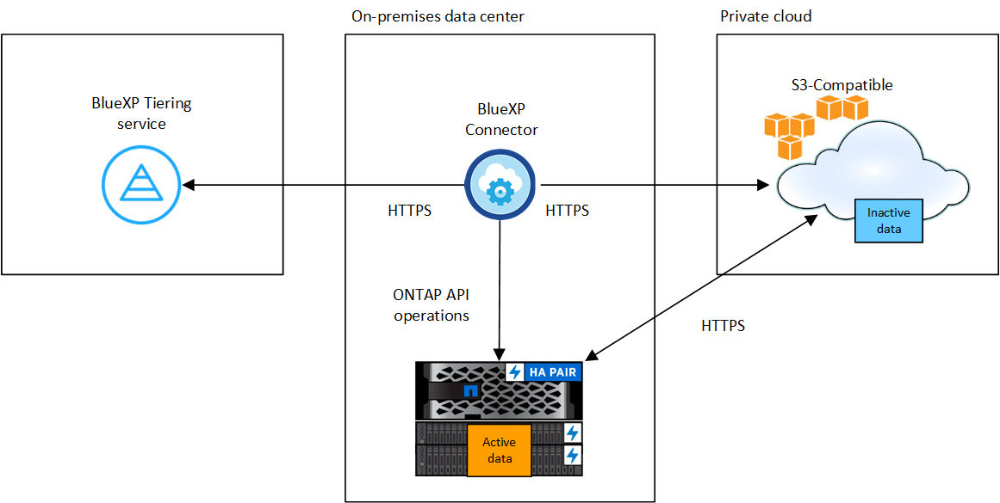

開始使用
開始使用
將內部部署ONTAP 的資料叢集分層、以儲存S3物件
 建議變更
建議變更
將非作用中的資料分層至任何使用簡易儲存服務（S3）傳輸協定的物件儲存服務、以釋放內部ONTAP 物件叢集上的空間。
目前、MinIO物件儲存設備已符合資格。

|
想要使用非正式支援的物件存放區做為雲端層的客戶、可以使用這些指示來執行。客戶必須測試並確認物件存放區符合其需求。 對於任何第三方物件存放服務所產生的任何問題、NetApp不提供支援、也不承擔任何責任、特別是當它未與產品來源的第三方達成協議時。茲確認並同意、對於任何相關損害、NetApp概不負責、也不需要以其他方式為該第三方產品提供支援。 |
快速入門
請依照下列步驟快速入門、或向下捲動至其餘部分以取得完整詳細資料。
 準備將資料分層至S3相容的物件儲存設備
準備將資料分層至S3相容的物件儲存設備您需要下列項目：
-
執行不支援更新版本的來源內部ONTAP 資源叢集ONTAP 、以及透過使用者指定連接埠連線至目的地S3相容物件儲存設備。 "瞭解如何探索叢集"。
-
物件儲存伺服器的FQDN、存取金鑰和秘密金鑰、讓ONTAP 整個叢集能夠存取儲存區。
-
安裝在內部部署上的 Connector 。
-
用於連接器的網路、可讓輸出 HTTPS 連線至來源 ONTAP 叢集、 S3 相容物件儲存設備、以及 BlueXP 分層服務。
 設定分層
設定分層在BlueXP中、選取內部工作環境、按一下「啟用」以使用分層服務、然後依照提示將資料分層至S3相容的物件儲存設備。
 設定授權
設定授權透過雲端供應商的隨用隨付訂閱、 NetApp BlueXP 分層自訂授權、或兩者的組合、支付 BlueXP 分層的費用：
-
訂閱的BlueXP PAYGO產品 "AWS Marketplace"、 "Azure Marketplace"或 "GCP 市場"，單擊*訂購*並按照提示進行操作。
-
若要使用 BlueXP 分層 BYOL 授權付款、請寄送 mailto ： ng-cloud-tiering@netapp.com ？ subject=Licensing[ 如果您需要購買一項授權、請聯絡我們 ] 、然後寄送給我們 "將其從 BlueXP 數位錢包新增至您的帳戶"。
需求
驗證 ONTAP 支援您的物件叢集、設定網路、以及準備物件儲存。
下圖顯示每個元件及其之間需要準備的連線：


|
Connector與S3相容物件儲存伺服器之間的通訊僅供物件儲存設定使用。 |
準備 ONTAP 您的叢集
將ONTAP 資料分層至S3相容物件儲存設備時、您的來源元集叢集必須符合下列需求。
- 支援 ONTAP 的支援功能平台
-
您可以將資料從AFF 不完整的系統分層、或FAS 是使用All SSD集合體或All HDD集合體的不完整系統進行分層。
- 支援 ONTAP 的支援版本
-
部分9.8或更新版本ONTAP
- 叢集網路連線需求
-
-
透過使用者指定的連接埠、這個支援S3的物件儲存設備會啟動HTTPS連線（在分層設定期間可設定連接埠）ONTAP 。
來源ONTAP 系統可從物件儲存設備讀取和寫入資料。物件儲存設備從未啟動、只是回應而已。
-
連接器必須駐留在內部環境中、因此需要傳入連線。
叢集與 BlueXP 分層服務之間不需要連線。
-
每個裝載您要分層的磁碟區的節點都需要叢集間LIF ONTAP 。LIF 必須與 IPspac_ 建立關聯、 ONTAP 以便連接物件儲存設備。
設定資料分層時、 BlueXP 分層會提示您使用 IPspace 。您應該選擇每個 LIF 所關聯的 IPspace 。這可能是您建立的「預設」 IPspace 或自訂 IPspace 。深入瞭解 "生命" 和 "IPspaces"。
-
- 支援的磁碟區和集合體
-
BlueXP 分層可分層的磁碟區總數可能少於 ONTAP 系統上的磁碟區數量。這是因為磁碟區無法從某些集合體分層。請參閱ONTAP 的《》文件 "功能或功能不受 FabricPool 支援"。

|
BlueXP 分層支援 FlexVol 和 FlexGroup 磁碟區。 |
準備S3相容的物件儲存設備
S3相容的物件儲存設備必須符合下列需求。
- S3 認證
-
當您設定與S3相容的物件儲存區分層時、系統會提示您建立S3儲存區或選取現有的S3儲存區。您需要提供 BlueXP 分層的 S3 存取金鑰和秘密金鑰。BlueXP 分層使用金鑰來存取您的儲存庫。
這些存取金鑰必須與具有下列權限的使用者相關聯：
"s3:ListAllMyBuckets", "s3:ListBucket", "s3:GetObject", "s3:PutObject", "s3:DeleteObject", "s3:CreateBucket"
建立或切換連接器
需要連接器才能將資料分層至雲端。將資料分層至S3相容的物件儲存設備時、內部環境中必須有連接器。您可能需要安裝新的 Connector 、或確定目前選取的 Connector 位於內部部署。
為連接器準備網路
確認連接器具備所需的網路連線。
-
確保安裝 Connector 的網路啟用下列連線：
-
透過連接埠 443 與 BlueXP 分層服務的 HTTPS 連線 ("請參閱端點清單"）
-
透過連接埠443連線至S3相容物件儲存設備的HTTPS連線
-
透過連接埠443連線至ONTAP 您的SURF叢 集管理LIF的HTTPS連線
-
將第一個叢集的非作用中資料分層、以儲存至S3相容的物件儲存設備
準備好環境之後、請從第一個叢集開始分層處理非作用中資料。
-
S3相容物件儲存伺服器的FQDN、以及用於HTTPS通訊的連接埠。
-
具有所需S3權限的存取金鑰和秘密金鑰。
-
選擇內部ONTAP 環境的不正常運作環境。
-
從右側面板按一下「啟用」以取得分層服務。

-
定義物件儲存名稱：輸入此物件儲存設備的名稱。它必須與此叢集上的Aggregate所使用的任何其他物件儲存設備都是獨一無二的。
-
選擇供應商：選擇* S3相容*、然後按一下*繼續*。
-
完成「建立物件儲存」頁面上的步驟：
-
伺服器：輸入S3相容物件儲存伺服器的FQDN、ONTAP 用來與伺服器進行HTTPS通訊的連接埠、以及具有所需S3權限之帳戶的存取金鑰和秘密金鑰。
-
* Bucket ：新增儲存庫或選取現有的儲存庫、然後按一下*繼續。
-
* 叢集網路 * ：選取 ONTAP 要用於連接物件儲存設備的 IPspace 、然後按一下 * 繼續 * 。
選擇正確的 IPspace 可確保 BlueXP 分層可設定從 ONTAP 到 S3 相容物件儲存設備的連線。
您也可以定義「最大傳輸率」、設定可將非使用中資料上傳至物件儲存的網路頻寬。選取*受限*選項按鈕、然後輸入可使用的最大頻寬、或選取*無限*表示沒有限制。
-
-
在「_Success」頁面上、按一下「繼續」立即設定磁碟區。
-
在「層級磁碟區」頁面上、選取您要設定分層的磁碟區、然後按一下*繼續*：
-
若要選取所有Volume、請勾選標題列中的方塊（
 ），然後單擊* Configure Volume*（配置卷*）。
），然後單擊* Configure Volume*（配置卷*）。 -
若要選取多個磁碟區、請勾選每個磁碟區的方塊（
 ），然後單擊* Configure Volume*（配置卷*）。
），然後單擊* Configure Volume*（配置卷*）。 -
若要選取單一Volume、請按一下該列（或
 圖示）。
圖示）。
-
-
在_分層原則_對話方塊中、選取分層原則、選擇性地調整所選磁碟區的冷卻天數、然後按一下*套用*。

您已成功設定資料分層、從叢集上的磁碟區到S3相容的物件儲存區。
您可以檢閱叢集上作用中和非作用中資料的相關資訊。 "深入瞭解如何管理分層設定"。
您也可以建立額外的物件儲存設備、以便在叢集上的特定集合體將資料分層至不同的物件存放區。或者、如果您打算使用FabricPool 「支援物件鏡射」、將階層式資料複寫到其他物件存放區。 "深入瞭解物件存放區的管理"。